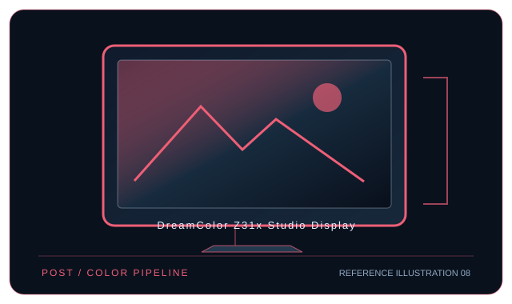

[ INDIVIDUAL COMPONENT // DISPLAYS ]
HP DreamColor Z31x Studio Display
31.1-inch DCI 4K studio LCD with integrated pop-up colorimeter and DreamColor modes.

IDENTIFICATION: HP model DreamColor Z31x Studio Display. Confirm the full rear-label model, region and hardware revision; published capabilities can differ by firmware, input board and bundle.
Specifications
| Catalog subcategory | Professional displays |
|---|---|
| Exact model / panel | 31.1-inch IPS LCD, LED backlight |
| Native resolution | 4096 × 2160 (DCI 4K, 17:9) |
| Refresh rate | Up to 60 Hz at native resolution |
| Color gamut | 100% Adobe RGB, 99% DCI-P3, and full sRGB/BT.709 coverage (HP typical specification). |
| Calibration features | Pop-up integrated colorimeter supports scheduled/manual calibration; HP DreamColor Assistant provides calibration and color-mode control. External probes are also supported for studio workflows. |
| Inputs / companion ports | DisplayPort 1.2 × 2, HDMI, USB-C with DisplayPort video and up to 60 W delivery, USB 3.0 hub and Gigabit Ethernet. |
| VESA / mounting | 100 × 100 mm VESA mount. |
| Power | AC 100–240 V; typical 120 W, maximum 260 W; USB-C host power delivery up to 60 W. |
Compatibility and deployment
For 4096 × 2160 at 60 Hz, check the GPU and connection path; DisplayPort 1.2/HDMI limits and host implementation affect timing. USB-C video requires DP Alt Mode. Use the built-in sensor and HP DreamColor Assistant for calibration; verify OS and firmware compatibility using the product support page.
Preservation notes
Record the complete rear-label SKU, serial/date code, installed firmware and options, calibration report, supported signal timing, tested source and cable, mounting hardware, regional AC rating and image condition. Keep the original hood/stand and model-specific setup documentation with the display; use trained service personnel for internal work.
Manufacturer documentation and references
- HP — DreamColor Z31x specificationsManufacturer product or specification reference for model identification and published capabilities.
- HP — Z31x setup and user guidesManufacturer support, user guide or product-specific documentation.